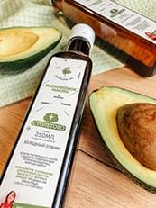
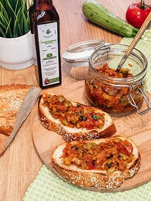
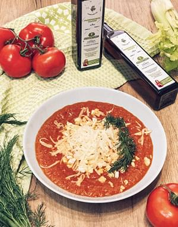

Рецепты блюд с рыжиковым маслом холодного отжима
Подробнее

Рыжиковое масло достаточно приятно на вкус, поэтому его можно использовать :
- для заправки салатов;
- для приготовления домашнего майонеза;
- для варёных блюд – гарниров, каш, подливок, соусов;
Хотя рыжиковое масло устойчиво к нагреванию, не чадит, не дымит, оно при нагревании теряет много своих полезных свойств, поэтому лучше подливать его в уже готовые блюда.
Быстрая кабачковая икра с рыжиковым маслом

Ингредиенты:
- Кабачки - 300 гр
- Морковь - 130 гр
- Лук - 120 гр
- Помидоры 1 шт - 150 гр
- Томатная паста - 1 ст.л
- Горчичное масло для жарки - 2 ст.л
- Рыжиковое масло - 1 ст.л
- Перец чёрный - 0,5 ч.л
- Соль - 1 ч.л
- Сухой чеснок - 0,5 ч.л
- Сахар - 1 ст.л
- Бальзамический уксус 0,5 ст.л
- Зелень по вкусу (у нас петрушка)
- 1) Натереть морковь на крупной терке. Измельчить лук. Кабачки и помидоры нарезать мелким кубиком.
- 2) Обжарить лук, затем добавить морковь, тушим вместе минут 5.
- 3) Добавить кабачки, потушить 15 мин. под крышкой, добавить помидоры, томатную пасту, соль, сухой чеснок и сахар. Томим ещё 10 мин.
- 4) Выключить плиту, добавить зелень, ароматное рыжиковое масло и немного бальзамического уксуса. Подавать с подсушенными на сухой сковороде, хрустящими тостами.
Томатно- сельдереевый суп с рыжиковым маслом

Быстрый, вкусный и питательный суп, который гармонично дополняется полезным
рыжиковым маслом, вареным яйцом и сыром. Томаты при тепловой обработке
становятся очень полезными, рыжиковое масло - источник ценных омега-3 жиров,
сыр и яйцо добавят вкуса, а сельдерей придает супу неповторимую пикантную
нотку.
Ингредиенты:
- Протертые томаты в собственном соку - 500 гр
- Вода или бульон - 300 мл
- Стебли сельдерея - 2- 3 шт
- Репчатый лук- 1 шт
- Варёное яйцо - 2 шт
- Твёрдый сыр - 40 гр
- Рыжиковое масло - 2 ст .л
- Растительное масло для жарки - 2 ст.л
- Сахар - 1 ч.л
- Специи ( орегано, соль, паприка, чёрный перец) - по вкусу
- 1) Лук, сельдерей, вареные яйца мелко нарезать. Сыр натереть на мелкой терке.
- 2) В кастрюлю с толстым дном налить растительное масло для жарки, добавить лук и сельдерей. Обжарить лук и сельдерей в течение 3-4 минут.
- 3) К обжаренным луку и сельдерею добавить протертые томаты в собственном соку. Добавить воду, овощной или мясной бульон до достижения нужной густоты супа. Посолить, поперчить по вкусу и обязательно добавить сахар для нейтрализации кислоты томатов. Довести до кипения и варить 12-15 минут.
- 4) Измельчить суп блендером до состояния супа-пюре.
- Готовый суп разлить по тарелкам, добавить рыжиковое масло, присыпать яйцом и тертым сыром и при желании украсить зеленью.